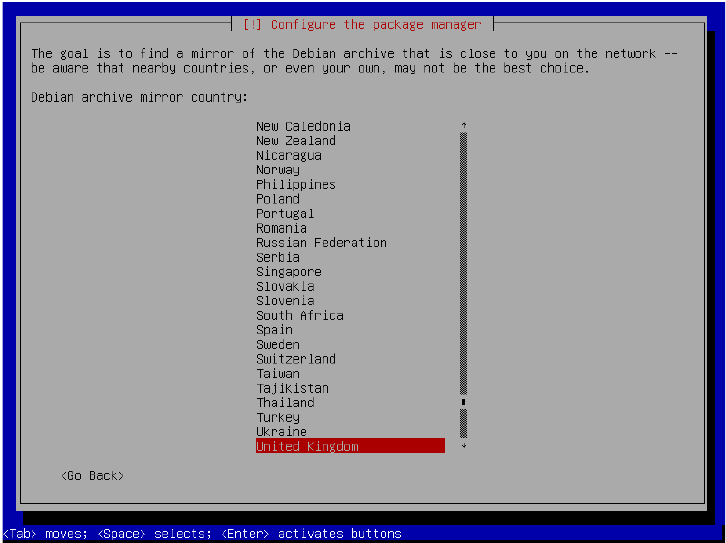

نصب سیستم عامل بر روی فلش درایو رمزنگاری شده
۱. زمانیکه وارد صفحه Partition disks شدید در قسمت partitioning method گزینه uided – use entire disk and set up encrypted LVM را انتخاب کرده و Enter کنید.
۲. در صفحه بعد فلش درایو خودتان را انتخاب کرده و Enter کنید.شما ممکن است گزینه های دیگری از دیسک ها؛ متفاوت با تصویر زیر مشاهده کنید. کاملن دقت کنید که فلش درایو را بدرستی انتخاب کنید چون قرار است پاک شود.مقدار عددی کنار نام هر درایو میتواند درایو درست را به شما نشان دهد. همچنین نام فلش درایوتان را در جایی یادداشت کنید چون بعدن به آن نیاز پیدا می کنید. در مثال زیر نام درایو مورد نظر sdc است. که ممکن است نسبت به سیستم شما متفاوت باشد.
نکته: اگر در حال نصب دبیان از روی فلش درایو هستید باید فلش درایوی جدای از فلش نصاب دبیان تان داشته باشید.(یعنی یه فلش دیگه نیاز دارید) در غیر این صورت اگر دبیان را بر روی فلش نصاب نصب کنید تمام فرآیند نصب در نهایت ناموفق خواهد بود.
۳. در صفحه بعد گزینه ی (All files in one partition (recommended for new users را انتخاب کرده و Enter کنید
۴. در ادامه با صفحه زیر روبرو میشوید Yes را انتخاب کرده , Enter کنید (دقت کنید که با Tab میتوانید بین دو گزینه جابجا شوید)
۵. در ادامه؛فرآیند نصب به صورت اتوماتیک فلش را پاک خواهد کرد. این بخش ممکن است زمان خیلی زیادی بگیرد.اگر قبلن از درایو برای ذخیره سازی اطلاعاتی که به هویت تان مربوط می شود استفاده کردید بهتر است بگذارید این مرحله تا آخر به پایان برسد. اگر چه اگر فلشتان به تازگی تهیه شده یا اینکه هیچ گونه اطلاعات حساسی بر روی آن ندارید میتوانید Cancel را انتخاب کنید و به گام بعدی بروید. تمام اطلاعاتی که از این پس بر روی درایو یو اس بی شما نوشته میشود رمزنگاری خواهد شد. اگرچه تمام اطلاعاتی که قبل از رمزنگاری بر روی آن ریخته اید ممکن است توسط ابزارهای جرمشناسی دیجیتالی آشکار شود.
۶. در صفحه بعد از شما پسورد رمزنگاری خواسته می شود.در اینجا بسیار مهم است که یک رمز عبور بسیار قوی انتخاب کنید در غیر اینصورت رمزنگاری فلشتان بیفایده خواهد بود. چنان که ما در گام ۱۳ از بخش – د فصل اول اشاره کردیم یک پسورد ۸ کارکتری هرگز پسورد خوبی نخواهد بود.از آنجایی که نصاب دبیان از برنامه cryptsetup و سیستم رمزنگاری LUCKS استفاده می کند؛توسعه دهنده این برنامه موارد زیر را برای ساخت یک پسورد قدرتمند مهم می داند:
(توجه کنید که نیاز نیست خیلی تو اعداد دقیق بشین فقط یه دید انتزاعی پیدا کنین کافیه)
در ابتدا طول رمز عبور مقیاس خوبی در برابر آنتروپی (ترکیبی بودن) آن نیست. برای مثال یک حرف کوچک از حروف انگلیسی (a-z) به شما ۴.۷ بیت آنتروپی می دهد؛ یک المان شامل a-z , 0-9 به شما ۵.۲ بیت آنتروپی میدهد یک المان شامل a-z , 0-9 و A-Z به شما ۵.۹ و a-zA-Z0-9!@#$%^&:-+ به شما ۶.۲ بیت آنتروپی می دهد. از طرف دیگر یک واژه انگلیسی رندوم به شما فقط ۳.۱...۰.۶ بیت آنتروپی بر هر کارکتر می دهد. استفاده از جملات بامعنا آنتروپی کمتری به شما میدهد استفاده از سری از حروف رندوم به شما آنتروپی بیشتری می دهد. از واژگانی که به شما مرتبط باشد یا در کامپیوترتان یافت میشود استفاده نکنید. اینگونه از حملات امروزه ؛ هر روز انجام می شود. برای آنکه امنیت معقول و قابل قبولی طی ۱۰ سال آینده داشته باشد. خوب است که دست بالا را گرفته و از ضریب ۱۰۰۰ استفاده کنید.
حالا سؤال این است که حمله کننده برای شکستن کد چقدر هزینه میکند که این به ارزیابی امنیتی شما بستگی دارد. برای استفاده عمومی من فرض را بر این میگذارم که حمله کننده ۱ میلیون دلار یا یورو برای آن هزینه خواهد کرد. پس ما توصیههای زیر را در نظر می گیریم:
لاکس: استفاده از بیش تر از ۶۴ بیت ؛ به عنوان مثال ۱۴ عدد تصادفی از a-z یا یک جمله تصادفی انگلیسی با طولی بیشتر از ۱۰۸ کارکتر.
اگر به صورت پارانوئیدی در نظر بگیریم حداقل ۲۰ بیت اضافه کنید. که این تقریبن ۴ کاراکتر اضافی برای رمز عبورهای رندوم است و تقریبن ۳۲ کاراکتر برای یک جمله رندوم انگلیسی است.
اطلاعات بیشتر در آدرس زیر:
https://gitlab.com/cryptsetup/cryptsetup
حال و حوصله حساب و کتاب ندارید؟ درسی که باید یاد بگیرید طولانی بودن ؛ رندوم بودن و بیمعنی بودن است. این موارد به شما آنتروپی بیشتری می دهند. مردم از راه های زیادی استفاده می کنند تا پسوردی بیمعنی بسازند که در ذهن شان بماند. برای مثال شما می توانید یکی از جملاتی که در یک فیلم آن را دیدهاید و از آن لذنت میبرید را با تاریخی که به یادتان بماند را استفاده کنید مانند مثل:
“If My Calculations Are Proper, When This Baby Hits 88 Miles Per Hour, You're Going 2 See Some Serious Business! January-1-2013?”
این یکی از ایمن ترین نوع رمز عبور است که شامل فراوانی آنتروپی زیادی نسبت به چیزیکه برنامه نویس Cryptsetup گفته است.
برای بحث بیشتر درباره پسورد قوی به آدرس زیر مراجعه کنید:
https://www.grc.com/haystack.htm
زمانی که درباره پسورد قویتان تصمیم گرفتید درون بخش Encryption passphrase آن را تایپ کنید و Enter کنید. یادتان باشد در صورتی که این پسورد را از یاد ببرید هر چیزی که بر روی دیسکتان دارید را از دست میدهید پس از به خاطر سپردنش اطمینان کامل حاصل کنید چون قابل بازیابی نیست.
۷. در صفحه بعد از شما خواسته میشود که پسورد خود را تأیید کنید؛ دوباره پسورد را تایپ کرده و Enter کنید.
۸. در تصویر بعد گزینه Finish partitioning and write changes to disk را انتخاب کرده و Enter کنید.
۹. در صفحه بعد از شما پرسیده میشود که آیا میخواهید تغییرات رابر روی دیسک بنویسید Yes را انتخاب و Enter کنید (با کلید Tab بین Yes یا No جابجا شوید)
۱۰. در صفحه بعد نوار پیشرفتی را مشاهده میکنید که نشان دهنده Installing the base system می باشد. این بخش ممکن است مدنی طول بکشد تا به اتمام برسد زمانی که تمام شد به شما پیام میدهید که: Debian archive mirror country که معمولن یک گزینه بر اساس موقعیت مکانی شماکه قبلن انتخاب کرده بودید به صورت پیشفرض انتخاب شده است ناحیه خود را انتخاب کرده و Enter کنید.

۱۱. در صفحه بعد سرور مربوط به Debian archive mirror را انتخاب کنید. دوباره شما میتوانید آنچه که سیستم انتخاب کرده را بدون تغییر به همان صورت رها کرده و Enter کنید.
۱۲. در صفحه بعد از شما میپرسد که آیا برای وصل شدن به اینترنت نیاز به پراکسی دارید.اگر جواب این بخش را نمیدانید ؛ شما نیاز به پراکسی برای وصل شدن به اینترنت ندارید پس فقط Enter کنید.
۱۳. نصب شروع به Retrieving files کرده و پکیج های مورد نیاز را برای OS نصب می کند.در صفحه بعد از شما پرسیده می شود: participate in the package usage survey شما No را انتخاب کرده , Enter کنید.
۱۴. در ادامه نصاب چند کاره دیگر را انجام داده تا زمانی که شما پیام choose software to install را مشاهده کنید. شما تنها نیاز به نصب Debian Desktop Environment و Standard System Utilities را دارید.بقیه گزینه ها را با استفاده از کلید های بالا پایین و پس از هایلایت شدن هر کدام با کلید Space از حالت ستاره دار در آورید در حالت بدون ستاره یعنی انتخاب نشده اند. زمانی که صفحه نمایش شما مانند تصویر زیر شد Enter کنید.
نکته: اگر نیاز به پرینت اسنادی از روی سیستم عامل Debian دارید میتوانید گزینه print server را انتخاب کرده بگذارید هر چند در صورتی که نیاز به پرینت ندارید نیازی به فعال بودن این گزینه نیست.
۱۵. حالا نصاب شروع به ریکاوری فایلها کرده و سپس شروع به نصب آنها می کند. اینکار ممکن است زمان بسیار زیادی بگیرد. سرانجام فرآیند نصب بوت لودر GRUB آغاز خواهد شد. اگر گراب سیستم عامل های دیگری را تشخیص دهد ممکن است شما به صفحهای هدایت شوید که از شما میپرسد install the GRUB boot loader to the master boot record ؛ گزینه No را انتخاب کرده و Enter کنید. اگر با چنین صفحهای مواجه نشدید به گام بعدی(۱۶) بروید.

۱۶. سپس از شما پرسیده می شود که میخواهید گراب را روی کجای هارد دیسک نصب کنید Install the GRUB boot loader on a hard disk در گام ۲ این بخش به شما گفته شد که نام درایو مورد نظر که در اینجا فلش درایو است یادداشت بردارید. مثال مورد استفاده در این آموزش sdc است. بر روی درایوی که میخواهید بر روی آن دبیان را نصب کنید رفته و Enter کنید.
۱۷. حالا پروسه نصب رو به پایان می رود. ممکن است با صفحه رو برو شوید که میپرسد: the system clock is set to UTC شما گزینه No را انتخاب کرده و Enter کنید. اگر این صفحه را ندیدید به مرحله بعد بروید.
۱۸. نهایتن به شما پیامی مبتی بر اتمام فرآیند نصب داده میشود Continue را انتخاب کرده و Enter کنید.
۱۹. نصاب کامپیوتر را ریبوت می کند. در حین ری استارت باید وارد منوی بوت شوید چنان که در گام ۱ از فصل اول بخش – د گفته شده است. زمانی که شما منوی بوت را فعال کردید فلش درایوتان را که بر روی آن دبیان را نصب کردهاید انتخاب کنید. در نهایت از شما خواسته میشود که یک گزینه برای بوت انتخاب کنید . به صورت پیشفرض بر روی دبیان است و در این حالت شما می توانید Enter کنید یا آنکه منتظر بمانید تا تایمر تمام شده و خودش وارد شود. تصویر نمونه زیر ممکن است دقیقن مانند تصویر شما نباشد. اما اصاصن یکی هستند.
نکته: اگر در این مرحله فرآیند نصب زمان زیادی از شما گرفته و وقت کافی ندارید میتوانید کامپیوتر را خاموش کرده و مانده فرآیند نصب را به بعد بسپارید.
نکته برای اشکال یابی: اگر پس از ورود به بوت فلشتان واردگراب (شبیه تصویر بالا) نشدید و صفحهای سیاه یا تصویر همراه با پرش نشانگر موس دیدید به پیوست این فصل بروید.احتمالن با یک اشکال بسیار معمول که شامل گراب و دبیان میشود روبرو شده اید. تعمیرش نسبتن آسان است.
۲۰. در صفحه بعد از شما پسورد خواسته میشود Enter passphrase. این همان پسوردی است که شما در گام ۶ ساخته اید. هنگام تایپ پسورد هیچ سمبلی بر روی صفحه نمایش مشاهده نمیکنید شاید این قضیه کمی عجیب به نظر برسد اما به دلایل امنیتی است اگر کسی در حال مشاهده صفحه باشد نمیتواند به طول پسورد تان پی ببرد. پسورد خود را تایپ کرده و Enter کنید.
۲۱. حالا دبیان شروع به پردازش بوت کرده و در نهایت پنجره ورود را مشاهده می کنید. زمانی که این پنجره را دیدید Enter کرده یا بر روی User کلیک کنید.
۲۲. در صفحه بعد از شما پسورد خواسته میشود. قبل از آنکه پسوردتان را تایپ کنید بر روی آیکون چرخ دنده در کنار Sign In کلیک کرده و GNOME Classic را انتخاب کنید. حال پسورد user که در گام ۱۳ از فصل ۱ بخش – د درست کرده ید را وارد کرده و Enter کنید.دبیان تا زمانی که از گزینه ی دیگری استفاده نکنید از GNOME Classic استفاده خواهد کرد.
بشما شادباش میگویم حالا یک فلش درایو رمز شده دارای سیستم عامل دبیان دارید.حال به فصل سوم بروید.